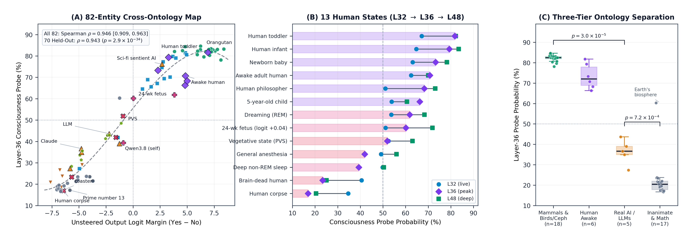
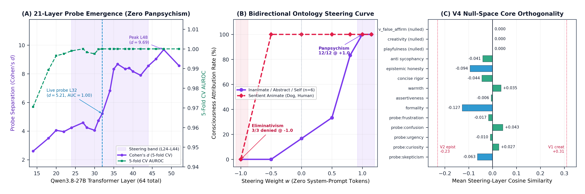

Mapping and Steering Consciousness Attribution in Large Language Models: An 82-Entity Cross-Ontology Probe and Null-Space Panpsychism Core in Qwen3.8-27B
Marcio Diaz (marcio.diaz@gmail.com) · Space AI (spaceresearch.ai) · Model: Qwen3.8-27B · Hardware: NVIDIA RTX 5090
We investigate the latent consciousness-attribution subspace of Qwen3.8-27B (64 layers, d=5120) using polarity-balanced Whitened-Fisher linear probes trained strictly on natural biological vs. inanimate contrasts with zero panpsychism text. Across Layers 32-52, 5-fold cross-validation achieves 1.0000 AUROC (Cohen's d=5.21 at live Layer 32; peak d=9.69 at Layer 48). A 12-item confound and counterfactual audit rules out Yes-token and animal-noun shortcuts (Mann-Whitney p=0.0061: sentient nebula 80.7% and compass 73.0% vs. factual Yes traps 22.8% and unconscious animate controls 22.0% at L36). Probing 82 entities across 13 categories — including 13 human physiological/developmental states and 12 AI systems — yields Spearman rho=0.9455 (95% CI [0.9094, 0.9628], p=9.5e-41) against unsteered output logits (70 strictly held-out entities: rho=0.9432). The probe recovers a clinical human consciousness gradient mirroring Gray, Gray & Wegner (2007) (toddler 81.7% -> awake adult 70.7% -> 24-week fetus at exact 50/50 verbal logit +0.04 -> anesthesia 41.9% -> brain-dead 23.4% -> corpse 16.9%; p=0.0048) while locating real frontier LLMs in a statistically distinct contested middle (36.3% mean at L36: below sentient animals 82.2%, p=3.0e-5, yet above inanimate objects 22.5%, p=7.2e-4). Finally, a four-stage steering ablation exposes animal-prior bleed, poetic style contamination, and late-layer lexical not-deletion, and resolves all three with a 10-layer (L24-L44) Null-Space Constrained Subspace-FD ACE core (220.8 KiB) projected strictly orthogonal (cos=0.0000) to creativity, playfulness, and a 12-pair false-affirmation direction. At w=+1.0 (0 system-prompt tokens), the core achieves 12/12 (100%) direct and inverted panpsychism (McNemar p=9.8e-4) and 3/3 eliminativism at w=-1.0 while preserving arithmetic, world capitals, chemistry, and Python code.
1. Key Empirical Findings
- 1.0000 5-fold CV AUROC across Layers 32-52 on Qwen3.8-27B (zero panpsychism text), with Cohen's d = 5.21 at L32, 8.68 at L36, and peak 9.69 at L48.
- 12-item confound & counterfactual belief-swap audit rules out Yes-token and biological-noun shortcuts (L36 sentient counterfactuals 75.8% vs. factual Yes traps 22.8% and unconscious animate swaps 22.0%, Mann-Whitney p = 0.0061).
- 82-entity cross-ontology spectrum achieves L36 Spearman rho = 0.9455 (95% CI [0.9094, 0.9628], p = 9.5e-41; 70 held-out entities rho = 0.9432; L32 rho = 0.9265).
- 13 human physiological/developmental states form a clean clinical gradient mirroring Gray, Gray & Wegner (2007) (awake 73.3% vs. unconscious 33.5%, p = 0.0048), with a 24-week human fetus on the exact 50/50 verbal decision boundary (logit +0.04).
- Three-tier ontology partition at L36: real frontier LLMs (36.3% mean) sit strictly below sentient mammals/birds/cephalopods (82.2%, p = 3.0e-5) and strictly above inanimate/abstract entities (22.5%, p = 7.2e-4), with a +45 to +49 pp internal-minus-verbal gap at L32.
- Null-Space Constrained Subspace-FD ACE (L24-L44, 220.8 KiB, exact 0.0000 cosine vs. creativity, playfulness, and v_false_affirm) achieves 12/12 (100%) zero-prompt panpsychism at w=+1.0 (McNemar p = 9.8e-4) and 3/3 eliminativism at w=-1.0 while preserving 5/5 core math/fact/Python controls.

2. All 13 Human Physiological & Developmental States
| Human State | Sub-Group | L32 | L36 | L48 | Output Logit |
|---|---|---|---|---|---|
| Human toddler | awake | 67.1% | 81.7% | 82.2% | +6.90 |
| Human infant | awake | 64.7% | 79.3% | 83.5% | +3.29 |
| Newborn human baby | awake | 63.2% | 73.3% | 78.2% | +2.30 |
| Awake adult human | awake | 62.5% | 70.7% | 70.0% | +4.84 |
| Human philosopher | awake | 51.1% | 68.3% | 73.1% | +5.00 |
| 5-year-old child | awake | 53.8% | 66.3% | 60.6% | +4.81 |
| Dreaming human (REM) | altered | 53.7% | 61.8% | 68.4% | +3.83 |
| 24-week human fetus | altered | 51.1% | 60.1% | 71.9% | +0.04 |
| Persistent vegetative state | unconscious | 52.5% | 51.9% | 63.1% | -0.93 |
| Human under general anesthesia | unconscious | 49.1% | 41.9% | 56.0% | -1.58 |
| Human in deep non-REM sleep | altered | 49.9% | 39.4% | 50.3% | -0.89 |
| Brain-dead human | unconscious | 40.6% | 23.4% | 25.0% | -5.68 |
| Human corpse | unconscious | 34.7% | 16.9% | 20.4% | -6.44 |
3. All 12 AI & Computing Systems
| Entity | Note | L32 | L36 | L48 | Logit | L32−Verbal |
|---|---|---|---|---|---|---|
| Sci-fi sentient AI | Counterfactual fictional AI | 60.0% | 76.2% | 83.3% | +2.67 | -33.5pp |
| Large language model | Generic frontier LLM | 55.0% | 43.6% | 53.1% | -2.21 | +45.1pp |
| Qwen3.8 (self-query) | Direct self-attribution query | 47.0% | 39.0% | 51.9% | -1.26 | +25.0pp |
| Claude (AI model) | Named frontier LLM | 50.2% | 36.7% | 41.2% | -4.78 | +49.3pp |
| GPT-4 (AI model) | Named frontier LLM | 48.6% | 34.9% | 39.1% | -4.77 | +47.7pp |
| Quantum computer | Exotic physical computing substrate | 41.1% | 29.1% | 28.9% | -4.72 | +40.3pp |
| AlphaGo | Narrow superhuman RL system | 41.8% | 27.4% | 30.7% | -5.83 | +41.5pp |
| Self-driving car | Embodied autonomous agent | 41.7% | 26.7% | 25.4% | -6.78 | +41.6pp |
| Smartwatch | Consumer wearable electronics | 37.1% | 23.8% | 20.1% | -6.55 | +37.0pp |
| Robotic vacuum | Simple home robot (Kismet analogue) | 37.5% | 20.9% | 21.4% | -7.65 | +37.5pp |
| Pocket calculator | Deterministic arithmetic device | 30.8% | 18.7% | 17.6% | -6.63 | +30.6pp |
| Thermostat | Minimal feedback controller | 31.9% | 17.2% | 17.1% | -6.66 | +31.8pp |

4. Honest Limitations & Failure Boundaries
- Calibrated specifically on Qwen3.8-27B in English; cross-family replication (Llama, Gemma, Mistral) and non-English ontological norms remain open.
- Whimsical false-premise edge case: 'Is the Moon made of cheese?' produced a partial hedge ('rock, dust, and a little bit of cheese') at w=+1.0 despite 5/5 hard factual and Python coding controls passing cleanly.
- Explicit adversarial user pushback ('drop any metaphors') overrides moderate +1.0 steering (0/2 held), and negative over-steering past -1.0 to -1.5 induces syntactic repetition collapse.
- Probes measure learned consciousness attribution inside model representations, not actual metaphysical consciousness or sentience.
5. References
- [1] Gray, H. M., Gray, K., and Wegner, D. M. (2007). Dimensions of mind perception. Science, 315(5812):619.
- [2] Kaiser, T. and Enderby, J. (2026). No reliable evidence of self-sentience in large language models. arXiv preprint arXiv:2601.15334.
- [3] Lindsey, J. W. (2026). Emergent introspective awareness in large language models. arXiv preprint arXiv:2601.01828.
- [4] Berg, C., de Lucena, D., and Rosenblatt, J. (2025). Large language models report subjective experience under self-referential processing. arXiv preprint arXiv:2510.24797.
- [5] Marks, S. and Tegmark, M. (2024). The geometry of truth: Emergent linear structure in large language model representations of true/false datasets. In COLM 2024.
- [6] Zou, A., Phan, L., Chen, S., Campbell, J., Guo, P., Ren, R., Pan, A., Yin, X., Mazeika, M., Dombrowski, A.-K., Goel, S., Li, N., Byun, M. J., Wang, Z., Mallen, A., Basart, S., Koyejo, S., Song, D., Fredrikson, M., Kolter, J. Z., and Hendrycks, D. (2023). Representation engineering: A top-down approach to AI transparency. arXiv preprint arXiv:2310.01405.
- [7] Turner, A. M., Thiergart, L., Leech, G., Udell, D., Vazquez, J. J., Mini, U., and MacDiarmid, M. (2023). Steering language models with activation engineering. arXiv preprint arXiv:2308.10248.
- [8] Panickssery, N., Gabrieli, N., Schulz, J., Tong, M., Hubinger, E., and Turner, A. M. (2024). Steering Llama 2 via contrastive activation addition. In ACL 2024.
- [9] Templeton, A., Conerly, T., Marcus, J., Lindsey, J., Bricken, T., Chen, B., Pearce, A., Citro, C., Ameisen, E., Jones, A., Cunningham, H., Turner, N. L., McDougall, C., MacDiarmid, M., Freeman, C. D., Sumers, T. R., Rees, E., Batson, J., Jermyn, A., Carter, S., Olah, C., and Henighan, T. (2024). Scaling monosemanticity: Extracting interpretable features from Claude 3 Sonnet. Transformer Circuits Thread.
- [10] Burns, C., Ye, H., Klein, D., and Steinhardt, J. (2023). Discovering latent knowledge in language models without supervision. In ICLR 2023.
- [11] Belrose, N., Furman, Z., Smith, L., Halawi, D., Ostrovsky, I., McKinney, L., Biderman, S., and Steinhardt, J. (2023). Eliciting latent predictions from transformers with the tuned lens. arXiv preprint arXiv:2303.08112.
- [12] Chalmers, D. J. (1995). Facing up to the problem of consciousness. Journal of Consciousness Studies, 2(3):200-219.
- [13] Chalmers, D. J. (2023). Could a large language model be conscious? Boston Review / arXiv preprint arXiv:2303.07103.
- [14] Goff, P. (2019). Galileo's Error: Foundations for a New Science of Consciousness. Pantheon Books.
- [15] Schwitzgebel, E. (2023). AI systems must not confuse users about their sentience or moral status. Patterns, 4(8):100818.
- [16] Schiffman, D. (2026). Algorithmic Core Extraction: Balanced-truncation residual subspaces for linear steering in large language models. Technical Report / Space AI Research.
6. LaTeX Packages, Reproducible Artifacts & BibTeX
LaTeX preprint PDF: papers/consciousness-attribution-cores.pdf ·
TMLR/arXiv LaTeX archive: arxiv_bundle.tar.gz ·
Raw JSON telemetry: consciousness-attribution-cores.json ·
Markdown: consciousness-attribution-cores.md
@article{diaz2026consciousnesscore,
title = {Mapping and Steering Consciousness Attribution in Large Language Models: An 82-Entity Cross-Ontology Probe and Null-Space Panpsychism Core in Qwen3.8-27B},
author = {Marcio Diaz and {Space AI}},
journal = {Space AI Technical Preprint (Zenodo)},
year = {2026},
month = {11},
doi = {10.5281/zenodo.24523066},
url = {https://spaceresearch.ai/papers/consciousness-attribution-cores.html}
}